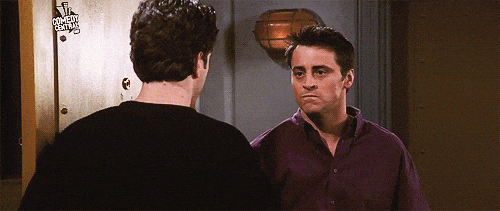
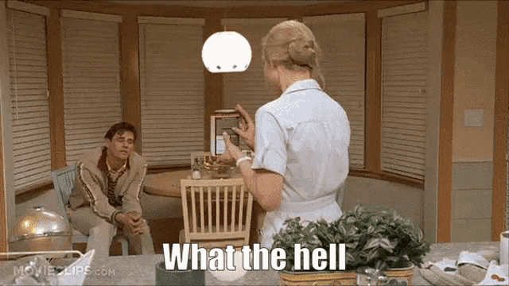
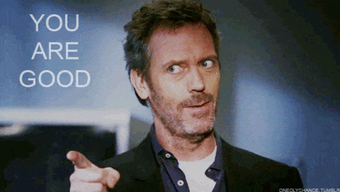
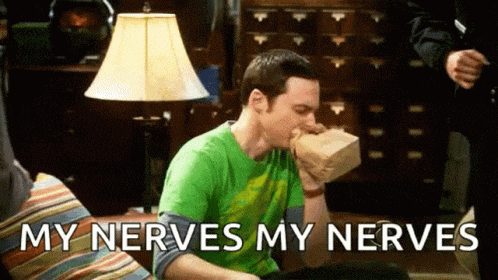
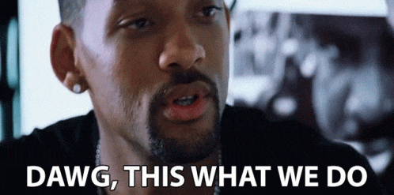
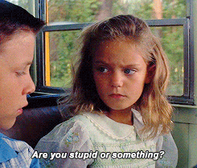
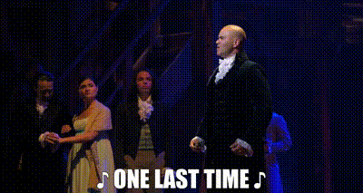
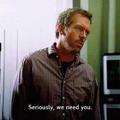
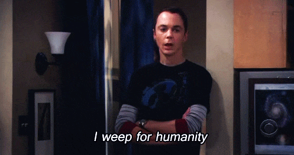

I want my best friend backk!!
You have no idea how many times I annoyed gayathri and Ashwin asking them, "If you are gonna be my friend again?" "If we will be back hanging out normally?", "If you'll come to the lab again?" They are so frustrated with me now, before they used to reply positively, now they are like: "It won't be normal, go and try to deal with it"

I thought after I return from home, things will be back to normal. But they are not!!
I was not sad after your response that day dudee... You can easily see that on my face if I was sad... I mean I get it, I always have a pretty depressed face but that's another thing.
After your reply to my text, I was actually happy that day you called me "best friend", and I told ashwin thrice which weirded him out completely.
Because, I never had bestfriends who are very like-minded!! I am very childish but I was happy when you officially told me I am your bestie!! I used to do dumbshit like competing over who comes to the lab first! LOL

You might not have noticed, but I considered you my bestiee long back. I was bragging to them about how you know capital cities of countries during the neurobio lab party!! But I think I over did it.. and It backfired LOL!! I already bragged to them many times how you're the topper of bio dept.. LOL!! (Don't kill me for this!)
I just want to know, what happened after friday, I still don't know If I did something to piss you off..
Because everything was going so good on friday!! and you were different the next day.
Probably things are already normal, it's nothing but just a coincidence that you forgot I was in the institute and left.. In that case, I am such an over thinker!!!
And I don't know if it's just you feeling guilty.. If you ask me there is absolutely nothing to feel guilty about. You are a good friend to me!! You told me I am the coolest person, surpassed my brother(you don't know how much this means to me! lol) and you said you like me!!

I cannot even tell if things are normal, or if they are not.... I just know that you are not behaving the same way you used to, You text like you just wanted to be nice. You probably are still feeling awkward, But It feels like you decided to slowly avoid me.. (I am not even sure about any of this being true tho).. It's just hard not knowing what is happening!! I can understand if you don't want to talk to me or hangout with me for some days, but It feels like It's never going back to normal...
It's actually very hard for me to vent out this stuff with any friend, but I feel like I can share this with you, I am very comfortable embarassing myself actually. I have never done this before!!
DUDEE, YOU'RE MY BEST FRIEND IN THE INSTITUTE!!, and I may have done some dumb thing and made it all awkward, that's it. I am very confident we will be back to normal, because we were best friends before any of this bullshit happened.
By looking at the way things are now, I am so afraid soon I will become a stranger to you... It's freaking me out!!
"I WANT MY BEST FRIEND BACK!!!"

I really really wish I could have told all of this sooner, but I didn't get the chance and for my worst luck, I got very sick for the first time in berhampur. And obviously I don't want to text you this during end-sem exams!! That's why I waited for the end sems to get over!!

Before you think this is weird, just remember I am a total nerd, I don't know how to convey this stuff in cool fashion. Do tell me tho if this entire thing is funny.. If you think this is cool and normal.. "TEXT DUMBASS TO ME"..
You can brag to people, that your best friend at IISER is the coolest nerd ever!!!

Probably, this effort will come across as begging for friendship, which is very weird for a 20 year old. But I don't care!! I mean I embarassed myself way worse infront of you!!(remember the time I ran out of the lab LOL!)
Thank god you are a free therapist or else for all this whining you would have priced this session for 1000 dollars!! (*wink wink*)
I probably just need assurance from you, because I am so baffled(oh yea, I used that word lol)..
Something like... "Sandesh, You're still my best friend, nothing changed or it will be back to normal soon, it's just you whining dumbass!!" (This dumbass is for me okay!)

Now I don't even want to know what changed you from that day!! because I feel confident, that you'll be back bestiee!!
I wrote a lot of stuff, because I am not sure if I get a chance to talk about this again. This is the last time I am gonna weird you out, I PROMISE!!

Thank you dude for being my best friend!! :)) and I am sorry if I hurt you :(
Best friends forgive each other's dumb stuff right!! Just for this once ...
Please be my best friend again!!!

Don't worry even if you are feeling awkward to text or start the conversation,I will text you once in a while till you get rid of that awkwardness. I promise I won't use a lot of full-stops too!!
AND FOR GOD'S SAKE YOUR WHATSAPP IS BROKEN!!

DUDEE, YOU DO WHATEVER YOU WANT,(*Please don't be harsh tho LOL*)
I AM NOT GIVING UPON FRIENDSHIP !! (I'll be proud if you recognize this line from any song)
I AM NOT LOSING MY BESTFRIEND TO MADHUSMITHA Or anyone...(she probably still calls me python guy(*hiss hiss*))
see next semester, I will show her how a math major can easily surpass her scores in bio (python isn't the only thing I know!!)
I am kidding, I don't have anything against her..LOL.. It's just funny!!
"I know you can totally imagine me doing that..LMAOO"
See I told you being my therapist is hard, you probably want to get paid very well if you are my therapist lol.. And you volunteered yourself...
If it turns out, I was just over thinking about all this, IT WILL BE MOST EMBARASSING THING I'LL EVER BE DOING!!!! I don't know I have a tendency to FREAK OUT ALL THE TIME!!!
Bruhhh, In all seriousness,
I never got the chance to talk to you in berhampur.
Bro, I saw you that day walking downstairs from the first floor while I was entering neurobiolab. A couple of minutes later, you texted me asking about my health, you could have just come inside and asked me that dumbass... I hope the BPR cows follow you to Chennai!!

Dei, Now that I am sick, I am letting it go okay, Once I am healthy and back next sem, I'LL KICK YOUR ASS!! if you don't come to the lab. Leave your awkwardness card, I will seriously do this!! I am bringing the SWORD RIPTIDE(*aka my cricket bat*)!!(I am very proud of myself for using this reference)
And one last thing, I will never ever mention the stuff from this site ever again..
In fact the program I wrote will delete the site 24 hours after you login with the password!! so, this will never be awkward!! But it's cool with me if you want to joke about it sometime later, that I embarassed myself by doing this..LOL
Finally, DUMBASS, DUMBASS, DUMBASSS!! YOU ALMOST GAVE UP ON THIS FRIEND!! TEXT ME ONCE IN A WHILE DON'T FORGET!!(TOTAL DUMBASS COUNT: 5). This one's just for the PUNCHLINE, I am not being mean!!